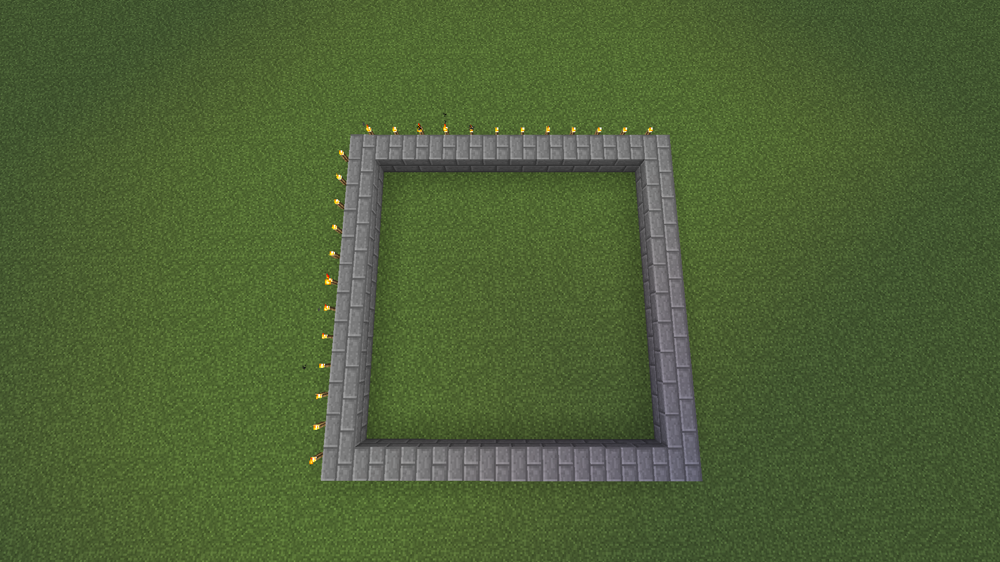
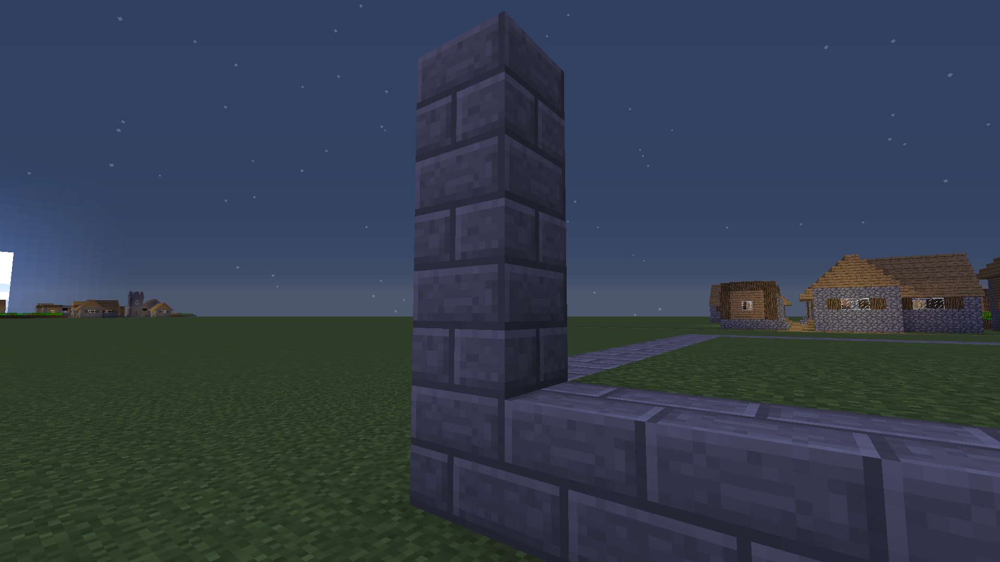

Villager Farma
Na farmu potrebujeme:

Postavíme 12X12 štvorec, Tip. Výpočty sa dajú robiť pomocou faklí (torch), tak ako na obrázku
Výška stavby je 4 blocky
Do rámu vložíme dvere
Do vnutra za dverami postavime blocky, a do trávy vložíme vodu ako na obrazku aby bola rovnomerne zavlchčená zem.

Na vodu položime koberce aby sa villigari, nezasekli vo vode

Zasadníme semiačka
Na záver môžme dať na vrch sklo aby bolo vidno dnu, či farma funguje. Pre štart farmy treba, hodit mrkvu pred villagerov.